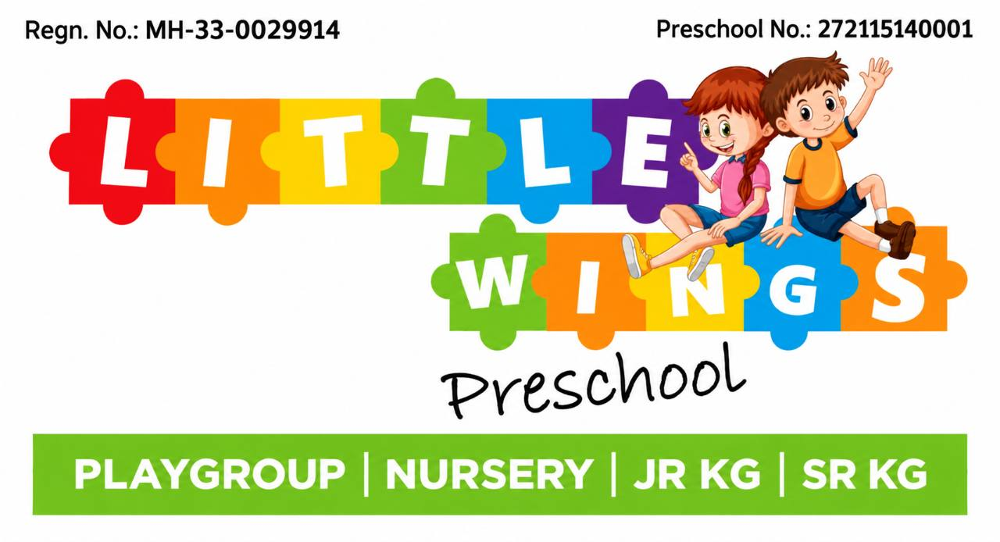

Install Little Wings Preschool
- Open this installation page in Chrome, updated through Google Play.
- Choose Install app when Chrome offers it, then follow the Android installation prompt.
- If Chrome says Already installed, check for Little Wings Preschool under Settings → Apps and try opening that entry. If it is absent, continue in the browser and share the browser details below for diagnosis.
If Play Protect shows an older-Android warning, cancel that package installation. Keep Play Protect enabled. The browser creates the Android installation package; a website update cannot change its Android target version.
Your OneDrive files are unchanged. A different browser may ask you to sign in and reconnect the same folder. Keep a JSON backup of any browser-only records before switching browsers.
Chrome says already installed, but the app is missing or blocked
Update Chrome through Google Play. Then type chrome://webapks into Chrome’s address bar. If Little Wings Preschool is listed, tap its Update button to request an updated browser-managed package. If there is no entry, use this page’s Install app option when Chrome offers it. This check does not delete app or OneDrive data.